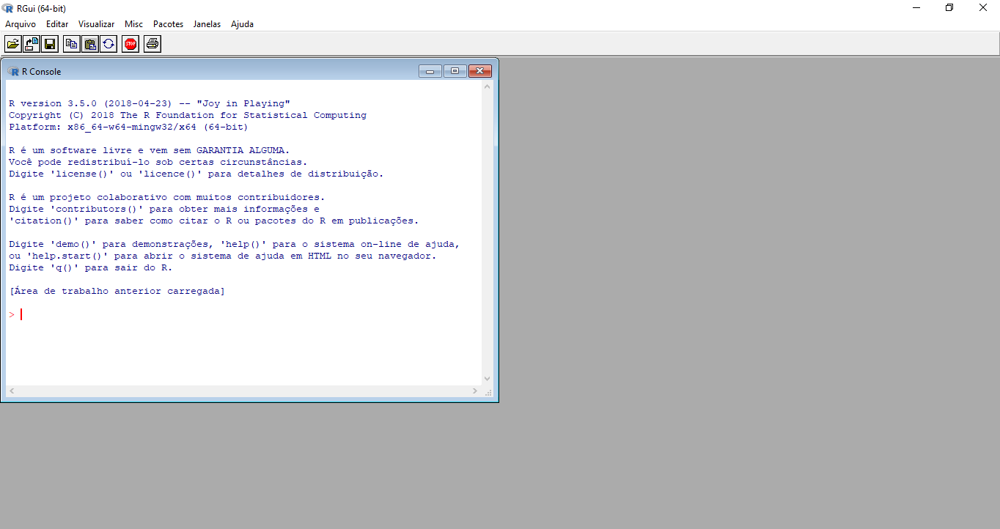

Introdução ao R¶
Leituras recomendadas¶
Leituras Recomendadas
1. O que é o R e o RStudio?¶
1.1. Linguagem de programação R¶
O R é uma linguagem de programação que vem crescendo bastante nos últimos anos. Apesar de inicialmente ter como público estatísticos, a linguagem é uma das mais utilizadas para análise de dados nas mais diferentes frentes. A flexibilidade trazido por uma ínumera quantidade de pacotes permite lidar não só com tabelas estilo Excel, mas também com texto, imagens, etc.
Quando baixamos o R pela primera vez nos assustamos com a sua interface, pois ela não é das mais agradáveis.

Para solucionar isto e adicionar outras funcionalidades que melhoram a experiência de quem utiliza a linguagem, foi desenvolvido uma IDE (Ambiente de desenvolvimento integrado) chamada RStudio.
1.1. RStudio¶
O RStudio nada mais é que um software, que integrado com o R, permite uma interação melhor com os objetos e rotinas criados com o R. O programa tem quatro painéis/seções:

A - Console: Local na qual temos o R prompt e que podemos executar linha por linha (chamados de inputs). Além disso, é o local no qual os resultados (chamados de outputs) irão aparecer. B - File/Plots/Help: Nesta seção podemos ter acesso às pastas que estamos utilizando durante as nossas rotinas no software, além de visualizar os gráficos gerados a partir das análises e verificar a documentação de funções e pacotes, que explicaremos em breve. C - Workspace: Os valores gerados no R, como por exemplo, variáveis e tabelas que você definiu irão aparecer aqui, sobretudo, na aba Environment. E o histórico de códigos rodados na aba History. Veremos nas próximas aulas que a aba Connections é útil caso estejamos conectados com alguma base de dados externa, como por exemplo, Access ou PostgreSQL. D - Editor: Aqui é onde os scripts são escritos. Scripts nada mais são do que uma série de comandos salvos em um arquivo. Eles são úteis para mantermos a reprodutividade do código, portanto, sempre que formos utilziar o RStudio é recomendado escrever um script.
Podemos então começar a escrever nossas primeiras linhas de código!
1.3. Abrindo um script¶
1- Podemos começar um novo script do zero
2 - Ou podemos abrir um script que já foi trabalhado
File → Open file → Aula1.R
Atenção à extensão .R
Num script tem linhas de comando e também linhas de comentários. Para marcarmos comentários basta colocarmos # Dessa forma, o R não executará o que está escrito depois das aspas
1.4. Algumas regras de boa conduta¶
-
Não escreva diretamente no console. Salve o seu código sempre em um script. Assim conseguimos salvor todas as decisões tomadas durante uma análise e pertmir com que uma outra pessoa também chegue nos resultados que obtivermos.
-
Nunca sobreponha o banco de dados. Uma vez que você tem um script, não é preciso salvar as alterações já que você será capaz de reproduzir os resultados no futuro.
-
Comente o seu código. Lembre-se que outras pessoas irão ler o seu código e que elas não fazem ideia do que passava na sua cabeça quando você tomou algumas decisões. Além disso, o seu eu do futuro irá agredecer um código bem documentado caso seja necessário revisitá-lo.
2. Nossas primeiras linhas de código¶
Uma das funcionalidades mais básicas do R é realização de operações
matemáticas. Se estamos digitando os comandos em um script, basta
colocarmos o cursor do mouse na linha do código e apertar Ctrl + Enter
e o resultado sairá no Console, assim como já havíamos mencionado.
3 + 1 # Soma 3 - 2 # Subtração 4 * 2 # Multiplicação 5 / 2 # Divisão
2.1. Objetos e atribuições I¶
“To understand computations in R, two slogans are helpful: • Everything that exists is an object. • Everything that happens is a function call.” — John Chambers
Dados são guardados dentro de objetos.
-
Objetos possuem diferentes formas de estruturas os dados:
-
Vetores
-
Listas
-
DataFrames
-
-
Objetos podem conter diferentes tipos de dados:
-
Números
-
Strings
-
Fatores
-
2.2. Atribuindo valores à variáveis (<-)¶
Quando fizemos as operações matemáticas, não salvamos os nossos
resultados. Logo, caso quiséssemos acessar novamente, por exemplo, o
resultado de 3 + 1, seria necessário digitar novamente 3 + 1 e
efetuar a operação. Contudo, é possível salvar os resultados em
variáveis e, ao fazer referência a essas variáveis, obter outro
resultado.
3 + 1
a <- 3 + 1
a * 2
b <- ("Hello, world")
b
dado <- c(1,2,3,4,5,6)
dado
2.3. Tipos de dados¶
2.3.1. Lidando com números¶
De certa maneira, estamos muito acostumados com esse tipo de dados. Você consegue pensar em algum exemplo? Os minutos passados entre o momento que você saiu de casa e chegou nesta sala de aula é exemplo. Além desse, podemso pensar na renda mensal da sua família, na quantidade de livros que você possui e assim por diante.
Tipos numéricos podem ser divididos em inteiros (integers) e reais (float). Diferentemente de outras linguagens de programação, você dificilmente terá que se preocupar com isso no R.
3 # numero inteiro 55.4 # numero real
2.3.2. Lidando com texto¶
Outro tipo de variável muito conhecida é o texto ou string. Para
declaramos um texto no R podemos utilizar aspas simples ('') ou aspas
duplas (""), mas lembre-se não podemos intercalar as aspas, como por
exemplo, 'olá mundo".
"Vargas" 'Janio Quadros' "1945"
Perceba que devido ao fato de 1945 estar entre aspas, ele não é mais um dado do tipo número, mas sim texto.
2.3.3. Lidando com fatores¶
Vamos supor que estamos trabalhando com dados de survey e em uma das questões temos a escala likert, em que as respostas vão do “Discordo totalmente” até o “Concordo totalmente” contabilizando um total de 6 categorias de resposta. Ocorre que para que o R entenda este tipo de dado como algo categórico, precisamos transformá-los em fatores (factors).
Para fazer essa transformação, utilizaremos uma função chamada
factor() que recebe como parâmetro um vetor com o que queremos
transformar em categorias.
factor(c("Discordo totalmente", "Discordo parcialmente", "Indiferente", "Concordo parcialmente", "Concordo totalmente"))
Diferente de quando executamos um dado tipo texto, os dados categóricos
apresentam os níveis das categorias (levels). Perceba que as nossas
categorias não estão de acordo com o que a escala likert pressupõe e
para arrumar este problema, precisamos definir os níveis através de um
outro parâmetro da função factor() chamado levels =.
factor(c("Discordo totalmente", "Discordo parcialmente", "Indiferente", "Concordo parcialmente", "Concordo totalmente"),
levels = c("Discordo totalmente", "Discordo parcialmente", "Indiferente", "Concordo parcialmente", "Concordo totalmente"))
Pode parecer um pouco confuso agora, mas iremos esclarecer estes pontos nos próximos tópicos.
2.3.4. Lidando com data e tempo¶
Muitas vezes precisamos lidar com data, como por exemplo, filtrar nossa análise em um intervalo de tempo. Porém, números e textos não são suficientes para entender as regras impostas pelas datas, como por exemplo, “01/01/2019” é mais recente que “31/12/2018”.
Iremos explorar esse assunto mais pra frente, pois existem formas mais eficientes de trabalhar com este tipo de dado, de qualquer forma um dado tipo data se apresenta da seguinte forma:
Sys.Date()
Parece uma variável texto, não? Porém se aplicarmos a função str(),
que serve para vermos qual é o tipo do dado veremos que,
str(Sys.Date())
2.3.5. Lidando com lógicos/booleanos¶
Valores booleanos são resultados de operações booleanas e podem ser definidos como verdadeiros ou falsos. Por convenção, trabalhamos com os termos em inglês. Portanto, TRUE ou FALSE.
Por operações booleanas, podemos pensar em diferentes testes que tenham necessariamente uma resposta ou verdadeira ou falsa. Por exemplo, 3 é maior do que 1? Verdadeiro! E 3 é menor do que 2? Falso!
Vamos realizar essas duas operações no R.
# 3 é maior do que 1? 3 > 1 # 3 é maior do que 1? 3 < 2
Existem, obviamente, outras operações. É possível também testar a
igualdade entre dois valores com ==.
# 2 é igual a 2? 2 == 2
Também podemos testar se dois valores são diferentes.
#120 é diferente de 20? 120 != 20
Outras variações utilizadas são o maior ou igual (>=) e o menor ou
igual (<=). Além disso, também é possível realizar essas operações com
textos.
# "FFLCH" é igual a "ICB"? "FFLCH" == "ICB"
Não iremos introduzir essa ideia aqui, mas caso seja de interesse também podemos utilizar as noções de maior e menor para textos. Você teria um palpite de como um texto pode ser maior do que outro?
2.3.6. Valores ausentes/ missings¶
O que são missings e por que existe um valor especial para eles?
Existem dois tipos de valores missing, o NA (not avaible) e o NaN
(not a number), ambos tem sentidos semelhantes, porém o primeiro é mais
genérico para cada tipo de dado. Para sabermos se um certo dado é
missing, utilizamos a função is.na().
is.na(NA) is.na(99)
Por que esse código retorna NA?
NA == NA
3. Exercícios - Parte 1¶
3.1. Tipos de Dados¶
Marque verdadeiro ou falso. Caso verdadeiro, informe o tipo de dado:
Obs: Caso apareça “+” no seu console ao testar as afirmações, basta apertar “Esc”
-
33,5 -
"Olá mundo" -
"O 'R' é uma linguagem legal" -
"O 'R é uma linguagem legal" -
"O 'R é uma linguagem legal' -
400e+10 -
factor("oi", levels = c("oi", "tchau")) -
TRUE -
FALSE
4. Estrutura de dados¶
As estruturas de dados são maneiras de organizar e guardar dados dentro da linguagem para que possamos trabalhar de forma mais eficiente. No nosso cotidiano utilizaremos três destas estruturas: vetores, listas e dataframes. Essas três estruturas podem ser dividas entre homogêneas e heterogênas. Mas o que isso significa? Basicamente diz respeito a quantidade de tipos de dados que ela pode receber, isto é, estruturas homogêneas só podem receber um tipo de dado, enquanto as estruturas heterogêneas podem receber mais de um tipo de dado.

4.1. Vetores (atômicos)¶
Um vetor atômico é a estrutura mais básica no R; é um vetor de dados homogêneo com apenas uma dimensão. Imagine o vetor como um três em que os valores estão ordenados em posições (primeiro, segundo, terceiro) e que todos os valores contidos por ele precisam ser do mesmo tipo.
Que tal um exemplo? Imagine que você queira organizar em um vetor a quantidade de pessoas dentro de vagões de um trem. Nesse sentido, a quantidade de pessoas no primeira vagão é seguida da quantidade de pessoas no segundo e assim por diante.
c(120, 29, 191, 18, 39)
Quantas pessoas estão no segundo vagão? 29? Acertou!
Perceba então que para construir um vetor basta colocarmos os valores
dentro de c().
4.1.1. Indexando vetores¶
Dado que criamos objetos, podemos acessar os valores específicos a
partir da posição dentro do vetor. No exemplo anterior, você poderia ter
pedido para o R lhe responder quem está na segunda posição. Como fazer
isso? basta salvar o vetor em uma variável e color [2]
trem <- c(120, 29, 191, 18, 39) trem[1]
Para indexarmos mais de um elemento podemos indexar de duas formas. Logo se quiséssemos o número de pessoas no terceiro e quarto vagão:
trem[c(3,4)] trem[3:4]
O que acontece se você utilizar [3:5]?
trem[3:5]
4.2. Listas¶
Em geral, dificilmente utilizamos as listas de maneira pura. Contudo, entender o funcionamento dela é essencial para pegar os fundamentos de uma outra estrutura de dados.
Vamos montar um guarda-roupa com três gavetas:
-
Primeira gaveta: 3 meias
-
Segunda gaveta: 5 camisetas com logotipo que vai de 1 até 5
-
Terceira gaveta: uma caixa com dois relógios
Uma forma de representar este guarda-roupa é por meio de uma lista!
lista <- list(c("Meia 1", "Meia 2", " Meia 3"), c(1, 2, 3, 4, 5), list(c("Relogio 1", "Relogio 2")))
Listas são parecidas com vetores atômicos, porém elas podem conter vetores de qualquer tipo (numéricos, lógicos, texto) e até mesmo outras listas.
4.2.1. Indexando¶
Apesar de parecido com um vetor atômico, a indexação tem alguns aspectos
diferentes! Quando indexamos um vetor, obtemos o elemento a partir de
[] em que dentro colocamos a posição de interesse, porém, se fizermos
o mesmo com a lista é como se abríssemos apenas a gaveta, mas não
acessamos o que está dentro dela. Ou seja, para acessar o elemento da
lista precisamos utilizar [[]].
lista[1] # Obtendo a posicao da lista lista[[1]] # Obtendo os elementos da lista lista[[1]][1] lista[[3]][[1]] # Obtendo o elemento da lista dentro de outra lista
4.3. Dataframes¶
Se você já utilizou uma planilha de Excel o DataFrame não possui quase nada de diferente. Assim como as listas, data frames são estruturas de dados heterogêneas. Você saberia dizer por que?
tabela <- data.frame(ano = c(2014, 2014, 2015, 2015, 2016, 2016),
pais = c('Brasil', 'China', 'Brasil', 'China', 'Brasil', 'China'),
pib = c(100,130, 110, 140, 160, 170),
pop = c(3, 8, 4, 9, 6, 14))
tabela
Diferentemente do Excel, não podemos selecionar uma célula e alterar um dado. No R, para manipular e visualizar uma tabela precisamos utilizar fuções. Não se estresse caso nunca tenho ouvido falar delas. Pense apenas que elas realizam alguma ação.
Repare nos resultados das funções a seguir:
View(tabela) # mostra o banco no console head (tabela) # mostra as seis primeiras linhas do banco no console str(tabela)# mostra a estrutura da tabela names(tabela) # mostra o nome das variáveis nrow(tabela) # nº de linhas ncol(tabela) #nº de colunas dim(tabela) # dimensões
4.3.1. Indexando¶
Assim como data frames, a indexação também tem mais de uma dimensão, isto é, primeiro indexamos a linha e depois a coluna, como por exemplo:
tabela[1, 2] # Primeira linha, segunda coluna tabela[1,] # Primeira linha, todas as colunas tabela[,1] # Todas as linhas, primeira coluna tabela[1:3,] # Linhas de 1 até 3, todas as colunas tabela[,2:4] # todas as linhas, colunas de 2 até 4
Como estamos lidando com tabelas também podemos indexar com o nome das colunas
tabela[,"pais"] tabela[2,"pais"]
Por fim também podemos indexar utilizando o operador $ seguido do nome
da coluna.
tabela$pib tabela$pib[1]
4.3.2. Importando dataframes (csv, Excel, etc.)¶
Uma das maneiras mais eficientes de se importar dados para o R é pelo uso dos seguintes pacotes:
-
readrpara a leitura de CSVs. -
readxlpara a leitura de planilhas de Excel. -
havenpara a leitura de arquivos.
Instalando pacotes do R
O R não possui todos os pacotes previamente. Em geral, utilizaremos o comando install.packages()
para instalar pacotes no R. Execute o comando install.packages(c('readr', 'readxl', 'haven')).
Lembre-se de carregar o pacote no R com o comando library(). Por exemplo, library(readr).
Você sabia que o TSE (Tribunal Superior Eleitoral) libera diversos dados sobre as eleições no site deles?
Que tal tentar baixar o banco de candidatos? Para isso, baixe os arquivos:
Às vezes, o navegador não irá fazer o download automaticamente e lhe mostrará uma tela repleta de caracteres. Calma! Clique com o botão direito na tela e selecione a opção Save Page As…. Recomendamos que você salve os dados dentro de uma pasta chamada data ou dados para manter o projeto organizado.
Para importar um CSV para o R, utilize a função read_csv() do pacote
readr.
Fique atento com o lugar que você salvou os arquivos!
Neste exemplo, os arquivos estão salvos dentro da pasta data.
library(readr)
banco_virgula <- read_csv('data/candidatos_sp_virgula.csv')
Se tudo tiver dado certo, agora você terá um banco_virgula no seu
ambiente de variáveis. Mas nem sempre um banco de dados é separado por
vírgula e mesmo assim ele pode ter a extenção .csv.
- Bancos separados por ponto e vírgula
;.
banco_pontovirgula <- read_csv2('data/candidatos_sp_pontovirgula.csv')
- Banco separados por tabs
\t.
banco_tab <- read_tsv('data/candidatos_sp_tab.csv')
- Banco separados por
@ou qualquer outrocaractere.
banco_arroba <- read_delim('data/candidatos_sp_arroba.csv', delim = '@')
- Banco Excel.
library(readxl)
banco_excel <- read_excel('data/candidatos_sp_excel.xlsx')
Repare que o número de linhas do banco Excel é menor!
Por que isso aconteceu?
- Banco Excel - Abas
library(readxl)
banco_excel_1 <- read_excel('data/candidatos_sp_excel.xlsx', sheet = 1)
banco_excel_1 <- read_excel('data/candidatos_sp_excel.xlsx', sheet = 2)
- Banco Stata
library(haven)
banco_stata <- read_stata('data/candidatos_sp_stata.dta')
5. Exercício - Parte 2¶
5.1. DataFrames¶
- Crie um dataframe com o nome, idade e filme preferido dos seus colegas de turma.
Como criar um dataframe?
Lembre-se que para criar um dataframe utilizamos a função data.frame() e que essa função recebe vetores
como parâmetros para cada coluna que desejamos criar. Por exemplo, se você quiser criar uma dataframe com
uma lista de números basta executar data.frame(lista_numeros = c(1,2,3,4,5,6,7))
-
Crie uma lista composta por 3 elementos.
-
Faça um script que documente o passo a passo da criação do dataframe.
-
Como podemos saber o conteúdo do segundo elemento da lista? Utilze a indexação.
-
-
No R temos, bancos para fins didáticos. Para utilizá-los basta usar a função data. Para esse exercícios utilizaremos o banco mtcars. Execute
data(mtcars). Repare que agora você pode acessar o bancomtcarsda mesma maneira que fizemos anteriormente com outros dataframes.-
Visualize o banco. Do que se trata?
-
Quais são suas variáveis?
-
E suas dimensões?
-
Selecione as 10 primeiras observações
-
5. Funções¶
Como você deve ter notado mencionamos algumas vezes a palavra função
durante o texto. Mas o que é isso? Podemos pensar cada função como uma
ação. Por exemplo, imagine você possa controlar a sua vida por meio
de funções. Se as coisas funcionam assim, provavelmente teríamos uma
função levantar(), beber_aguar() e assim por diante. No R, o
princípio é o mesmo e precisamos utilizar funções para executar
quaisquer comandos que precisamos que sejam operados. Por exemplo,
quando você executou read_csv(), você chamou um código que abre o
arquivo específicado e estrutura cada linha dentro de um dataframe.
Mas como uma função sabe sobre onde ela precisa operar? Como
read_csv() sabia que precisava abrir aquele arquivo? Para isso,
utilizamos parâmetros. Parâmetros alteram o comportamento das nossas
funções e nos permitem especifícar, por exemplo, um arquivo para a
read_csv() escrevendo read_csv('arquivo.csv').
Vamos ver isso na prática com outra função bastante importante, a
mean().
Como aprender a utilizar funções?
Obviamente, você pode utilizar o Google, mas muitas vezes não é necessário sair do RStudio.
Se você quiser, utilize o comando ?mean e tente ler a documentação e os exemplos.
Pacotes instalados pelo CRAN necessariamente são acompanhados por uma documentação que explica
o que as suas funções fazem.
Vamos tentar rodar um exemplo?
x <- c(1,2,3) xm <- mean(x) xm
A função mean() calcula a média de qualquer vetor numérico para a
gente e podemos utilizar para ter uma noção dos nossos dados durante uma
análise.
5.1. Pacotes¶
Segundo a definição do livro R Packages, escrito por Hadley Wickham, um pacote é uma unidade fundamental de compartilhamento de códigos, dados, documentação e testes. Em outras palavras, os pacotes são coleções de códigos (funções) e dados desenvolvidos pela comunidade.
Estes pacotes ficam localizados no que chamamos de repositório. O
principal repositório recebe o nome de C**omprehensive **R
**A**rchive **N**etwork, o também chamado, CRAN. Mas existem outros
também, como o Github, no qual a forma de obter os pacotes muda. Para
instalar um pacote, utilize o comando install.packages() em que o
argumento principal é o nome do pacote que queremos instalar.
Uma peculiaridade desta função é que por padrão ela instala os pacotes que estão no CRAN, como por exemplo, vamos instalar um pacote chamado “dplyr”
install.packages("dplyr")
Após instalarmos o pacote, devemos habilitá-lo com uma função chamada
library()
library(dplyr)
Caso o pacote não esteja no CRAN, mas sim no Github, devemos instalar o
pacote com o auxilio de uma função chamada install_github() do pacote
devtools.
install.packages("devtools")
library(devtools)
install_github("abjur/abjutils")
library(abjutils)
6. Controladores de Fluxo¶
É muito comum estabelecermos uma condição para tomar uma decisão, como por exemplo, ‘Porcentagem de votos maior que 50% pode significar vitória, caso contrário, derrota’. Além disso, muitas vezes precisamos percorrer diversos valores, como por exemplo, para cada eleição verificamos se o presidente eleito teve mais de 50% dos votos.
Para que possamos fazer isso, utilizaremos o if/else e o for!
6.1. if/else¶
A estrutura do if/else é a seguinte:
if(<condicao>){
<comando1>
<comando2>
<etc>
}else{
<comando3>
<comando4>
<etc>
}
Podemos interpretá-la da seguinte maneira: Se a condição for verdadeira, execute os comandos 1 e 2, caso contrário, execute os comandos 3 e 4. Pensando em algo menos abstrato podemos dizer que caso o candidato para o pletio tenha recebido mais de 50% dos votos, ele está eleito, caso contrário, ele perdeu a eleição.
porcentagem_de_votos <- 55
if(porcentagem_de_votos > 50){
print("Eleito")
} else {
print("Não eleito")
}
6.2. for¶
for (i in x){
<comando1>
<comando2>
}
Nós lemos o for acima da seguinte maneira: Para cada valor “i”
presente na sequência “x”, realize tais comandos. Ou seja, para cada
linha da nossa tabela, some um ao percentual de votos recebidos.
Vamos criar o seguinte dataframe:
-
ano: ano da observação. -
pais: país da observação. -
pip: Produto Interno Bruto do país. -
pop: População do país.
tabela <- data.frame(ano = c(2014, 2014, 2015, 2015, 2016, 2016),
pais = c('Brasil', 'China', 'Brasil', 'China', 'Brasil', 'China'),
pib = c(100,130, 110, 140, 160, 170),
pop = c(3, 8, 4, 9, 6, 14))
Nosso objetivo:
Criar uma terceira coluna com o pip per capta com um
for
for(i in 1:nrow(tabela)){
print(tabela$pib[i])
}
Vamos entender algumas coisas aqui,
-
nrow(tabela)é uma função que retorna o número de linhas de uma tabela, ou seja, seu resultado é um número. -
Quando temos
1:nrow(tabela), estamos criando um vetor com uma sequência de 1 até o número de linhas da nossa tabela, no caso, 6. Isso significa que nossoforvai percorrer as treze linhas da tabela. -
Uma vez que o
iassumirá os valores de 1 até 6, podemos indexar o vetortabela$pip[i]com o[i]para obter o número do pip correspondente a linhai. Dessa maneira podemos dividirtabela$pip[i]pelatabela$pop[i]e obter a _renda per capta.
Vamos agora voltar ao nosso objetivo principal:
tabela$pib_capta <- NA # Criando uma coluna vazia
for(i in 1:nrow(tabela)){
tabela$pib_capta[i] <- tabela$pib[i] / tabela$pop[i]
}
print(tabela)
Por fim, nós podemos misturar o for com o if para obter um
comportamento customizável dentro do nosso loop.
Por exemplo, vamos criar uma classificação de PIB per capta entre alto
e baixo. Para isso, iremos utlizar o 20 como o discriminador entre essas
duas classes. Nesse sentido, se pib_capta for maior do que 20 devemos
classificar
tabela$pip_capta_class <- NA # Criando uma coluna vazia
for(i in 1:nrow(tabela)){
if(tabela$pib_capta[i] > 20){
tabela$pip_capta_class[i] <- 'Alto'
} else {
tabela$pip_capta_class[i] <- 'Baixo'
}
}
print(tabela)
PARABÉNS!!! 
Enfim, após esse breve resumos de conceitos básicos de programação você será capaz de interagir com pacotes com uma vasta variedade de pacotes, além de conseguir desenvolver as próprias soluções quando for necessário.
7. Exercícios¶
Exercicio 1 - Tipos de dados¶
Execute os códigos abaixo e verifique se são dados válidos em R. Caso verdadeiro, informe o tipo de dado:
Obs: Caso apareça “+” no seu console ao testar as afirmações, basta apertar “Esc”
-
33,5 -
"Olá mundo" -
"O 'R' é uma linguagem legal" -
"O 'R é uma linguagem legal" -
"O 'R é uma linguagem legal' -
400e + 10 -
factor("oi", levels = c("oi", "tchau")) -
true -
False
Exercicio 2 - Manipulando variáveis¶
- Altere o valor de
v_numeropara 42
v_numero <- 42.5
- Altere o valor de
v_caracterepara “universo”.
v_caractere <- "algum texto"`
- Altere o valor de
v_logicalpara FALSE
`v_logical <- TRUE`
Exercicio 3 - Estruturas de Dados¶
-
Crie dois vetores:
-
O primeiro (
nome) deve conter o nome de pelo menos 5 colegas que estão sentandos ao seu redor. -
O segundo (
altura) deve conter a altura desses colegas.
-
vetor_nome <- c() vetor_altura <- c()
-
Acesse o primeiro nome do
vetor_nome. Lembre-se que você precisa dos[]. -
Acesse os primeiros três valores de altura no
vetor_altura. -
Faça isso apenas utilizando
[]e: -
Faça isso apenas utilizando
[]ec() -
Crie um
dataframea partir devetor_nomeevetor_altura.
tabela_colegas <- data.frame(nome = <completar>,
altura = <completar>)
-
Usando a indexação, obtenha:
-
O vetor
nomedentro do dataframetabelas_colegas -
O vetor
alturadentro do dataframetabelas_colegas -
Obtenha a primeira observação da sua tabela (primeira linha)
-
-
Utilizando funções obtenha:
-
A média de altura dos seus colegas
-
Uma tabela (
table()) dos nomes dos seus colegas -
O desvio padrão da altura (
sd())
-
Exercicio 4 - Controladores de Fluxo¶
-
Imprima todas as alturas de
tabelas_colegascomforeprint(). -
Crie uma classificação para a altura dos seus colegas com
foreif. Não se preocupe com o valor utilizado. Contudo, case deseje, você pode dividí-los pela mediana ou pela média.
Exercicio 5 - Importação de Dados¶
- Escolha um dos bancos abaixo ou qualquer outro de seu interesse. Baixe o banco, utilize as funções para explorar as variáveis, retire algum resumo de uma variável (média, contagem, etc.).
Relembrando as funções
Você pode utilizar View(), head(), str(), names(), entre outras para ter uma ideia geral do banco de dados.
Para extrair estatísticas, você pode utilizar mean(), sd(), median(), etc.
Lembre-se que o Google é o seu melhor amigo! Pesquisa outros comandos que sejam do seu interesse!
| Banco | Link |
|---|---|
| Banco Eleições | Download |
| Preço Médio de Combustíveis no Brasil | Download |
| Banco de Pokemons | Download |
| Vagas de Emprego em Nova Iorque | Download |
Exercicio 6 - Desafio¶
Com o banco de dados do exercício anterior tente levantar algumas hipóteses sobre as relações de variáveis. Por exemplo, “eu acho que X causa Y”. Anote todas essas hipóteses.
Uma vez feito isso, tente:
-
Criar um gráfico que ressalte a relação entre essas variáveis.
-
Procure rodar um teste estatístico que pronha à prova a sua hipótese (Teste t, ANOVA, regressão linear, regressão logística, etc.).
Por onde começar?
Existe um pacote de visualização de dados muito famoso para o R chamado ggplot2.
Quanto ao teste estatístico, o R possuí todos os testes citados implementados, ou seja, você não
precisa baixar um pacote para aplicá-los. Tente procurar na internet. Existem referências tanto
em português quanto em inglês.